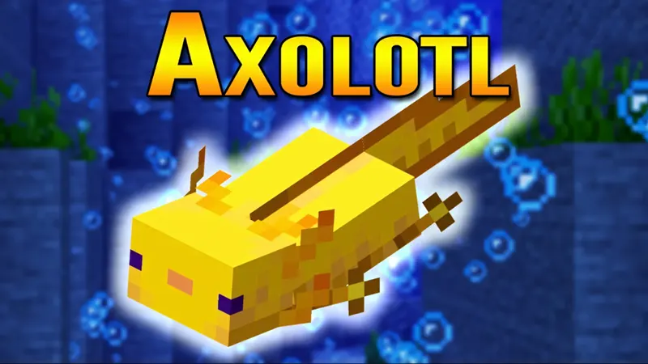
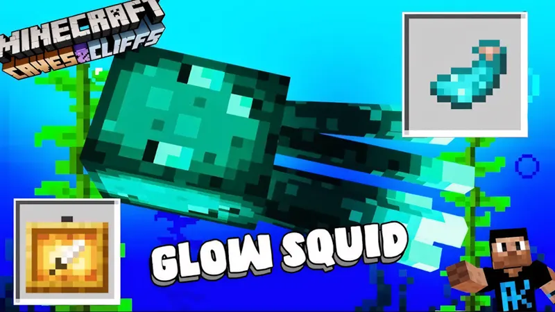
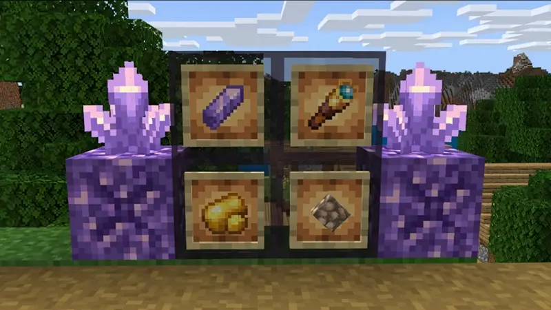

Minecraft PE 1.17.0
có nhiều thay đổi mang đến trải nghiệm thú vị cho người dùng. Tiêu biểu như:
Mobs mới gồm có:
Axolotl (xuất hiện như một đồng minh dưới nước mỗi khi đi vào hang động ẩm ướt.
Chúng sinh sống trong hồ nước tối tăm, có khả năng giả vờ chết khi bị thương và tự phục hồi.
Ngoại trừ rùa và cá voi, mọi sinh vật dưới nước đều bị Axolotl tấn công.);
Mực phát sáng trong hang động được gọi là Glow squid(mực phát sáng cung cấp ánh sáng tự nhiên.
Chúng ngừng phát sáng và bơi để né đòn, sau đó phát sáng trở lại khi bị tiêu diệt. Khi chết,
mực rơi ra túi mực huỳnh quang dùng để chế tạo vật phẩm phát sáng hoặc trang trí.);
Goat – dê núi(Dê xuất hiện trong quần xã sinh vật trên núi, sinh sống theo đàn. Chúng nhảy cao,
có thể nhảy qua chướng ngại tuyết mịn. Dê có thể đẩy các sinh vật xung quanh ra xa);
Warden (là sinh vật bí ẩn tồn tại trong Deep Dark. Chúng phản ứng với âm thanh,
có sát thương cao và có lượng máu lớn).
Một số tính năng mới như:
Hang động mới – Lush Caves(Lush Caves tràn ngập cây cỏ và Spore Blossom phát sáng,
tạo cảm giác xanh tươi mát mẻ dưới lòng đất.); Dripstone Caves(Có nhiều hang động
và thạch nhũ bí ẩn trong Dripstone Caves, có thể gây sát thương); Deep Dark(Nơi sinh sống
của Warden kết hợp quặng quý hiếm và địa hình nguy hiểm)
Các khối mới:
Amethyst Geodes (tạo ra khối thạch anh tím. Người chơi khai thác để chế tạo kính thiên văn,
đèn lồng và vật phẩm trang trí. Khối thạch anh không thể phá huỷ, tinh thể rơi ra từ geode,
mở ra cơ hội sáng tạo và phát minh); Quặng đồng (khai thác bằng đá cúp hoặc tương tự,
rơi ra đồng thô được đúc thành thỏi. Khối đồng thay đổi màu sắc theo thời gian, từ nâu sang xanh lục.
Để phục hồi màu sắc ban đầu, cần dùng chất chống oxy hoá và cạo sạch sáp. Đồng dùng chế tạo chuông
và khối trang trí); Khối Redstone và cơ chế mới – Sculk và cảm biến âm thanh(Cảm biến âm thanh
phản hồi bước chân và chuyển động trong Khối Sculk. Khi kích hoạt, gửi tín hiệu Redstone, có thể
phát triển cơ chế tự động hoá và hệ thống bẫy mới. Đây là cơ hội để sáng tạo cơ chế trong game.);
Nến kết hợp hoa đỗ quyên – vật phẩm trang trí mới.
Một số thay đổi khác:
Tăng chiều cao thế giới và quần xã sinh vật mới. Thế giới mở rộng từ -64 đến 430 khối.
Quần xã sinh vật trên mặt đất gồm thảo nguyên, đồng cỏ, hẻm núi; hang động có Dripstone Caves và Lush Caves.
Có nhiều cơ hội trải nghiệm địa hình độc đáo cùng tài nguyên phong phú hấp dẫn người chơi.